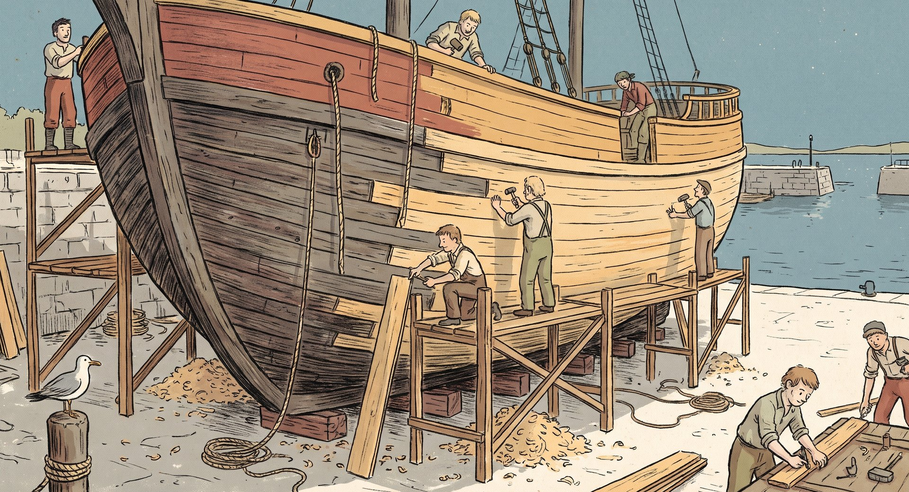

1
2026 유레카 프로젝트 · 국민대학교 소프트웨어융합대학 · 팀 E26-AI01-07
생각의 방THINK ROOM
1시간 접속, 몇 주 치 생각. 그 기억은 온전히 내 것.
AI가 답을 내놓는 2045년, 사람이 스스로 생각할 시간을 되찾아 주는 생각 가속 공간
Homo sapiens
슬기로운 사람
인간은 스스로를 힘이 아니라 ‘지혜’로 정의했다.
AI의 속도를 따라가려면 인간의 생각도 함께 자라야 한다.
Error507: Insufficient Brain Storage
2
문제와 사용자
누구의 어떤 문제를 해결하는가?
문제
게으른 것이 아니라 효율적인 선택이다.
그러나 효과적이지는 않다.
그러나 효과적이지는 않다.
4,320배
3일(4,320분)이 걸린다고 가정하면, AI에게 묻는 1분이 이만큼 효율적이다. 그래서 간단한 생각조차 AI의 응답을 선택한다.
증거 · 수학계
수학 논문 수arXiv 수학 분야 · 연간 신규 논문(편)
2026년은 1~10월만 집계인데 이미 2025년 전체를 넘었다. (OpenAI 증명 원고 700여 편 공개 10.6 · 인간수학협회 성명 10.7)
사용자
혼자 깊이 생각할 시간이 꼭 필요한데, 낼 수 없는 사람
진리를 탐구하는 사람수학자 서윤(39)
진짜 바쁜 사람스타트업 대표 도현(44)
마음이 힘든 사람회사원 하은(31)
3
미래 장면
2045년, 수학자 서윤의 하루


사용 전
AI의 답을 받아 들지만 이해하지 못한 채 넘어간다사용 후
1시간 접속해 몇 주 치를 직접 생각하고, 내 말로 설명한다핵심 경험
눈을 떴을 때 몇 주 동안 씨름한 기억이 남아 있고, “내가 이해했다”고 느끼는 순간4
기술 방식
어떻게 작동하는가?
STEP 01
읽기
헤드밴드가 뇌 신호를 측정하고 AI가 해독한다
→
STEP 02 · 핵심 기능 1 · 가상 공간
가속
내 뇌를 모사한 모델이 컴퓨터 위에서 몇 주를 1시간으로 압축한다
→
STEP 03 · 핵심 기능 2
귀환
생각한 과정이 결론과 함께 내 기억으로 돌아온다
→
STEP 04 · 핵심 기능 3
복기
생각이 글·영상으로 남아, 막힌 곳부터 다시 본다
안전장치정책 가정
1회 최대 4시간사용 후 뇌 정보 삭제최고 보안 등급본인만 열람
이미 시작됐다칠레 헌법(2021) · 미국 콜로라도·캘리포니아 신경 데이터법(2024) · 유네스코 권고(2025)
5
검증 질문
기술 · 철학 · 사회, 앞으로 검증할 것
기술
솔직히, 아직은 구현할 수 없다.
근거 있음
읽기 마비 환자 대상 임상이 진행 중이다. 승인된 기기는 아직 없다.
부분 근거
쓰기 감각 신호는 일부 가능하다. 기억은 간질 환자 대상 초기 연구뿐이다.
가정
복제·가속 현재 근거가 없다. 우리가 ‘그리는’ 2045년의 가정이다.
NEXT가장 먼저 검증할 질문: 기억을 ‘쓸’ 수 있는가?
철학 · 테세우스의 배
컴퓨터 속의 나는 ‘나’인가?
생각하는 동안 의자에 누워 있는 뇌의 나는 나인가? 돌아온 기억은 내가 겪은 것인가?
우리의 가설 정체성은 기억의 연속에 있다. 우리는 매일 잠들고 마취도 받지만 같은 사람이다.

OPEN복제본의 경험은 원본에 합쳐지는가, 삭제되는가?
사회
사람들이 받아들일까?
문자도, 스마트폰도, 디지털 결제도 처음에는 걱정의 대상이었다. 지금은 모두 일상이다.
편익+안전장치+점진적 노출=일상

2026
환자 대상 임상

2036경 가정
일상 기기로 확산

2040년대 가정
시대에 맞춘 규제·정책
2045
생각의 방